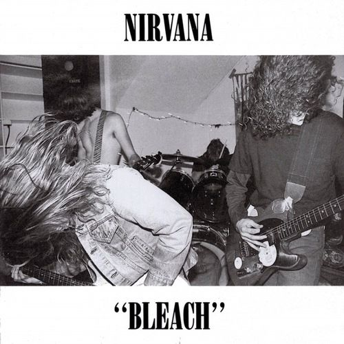
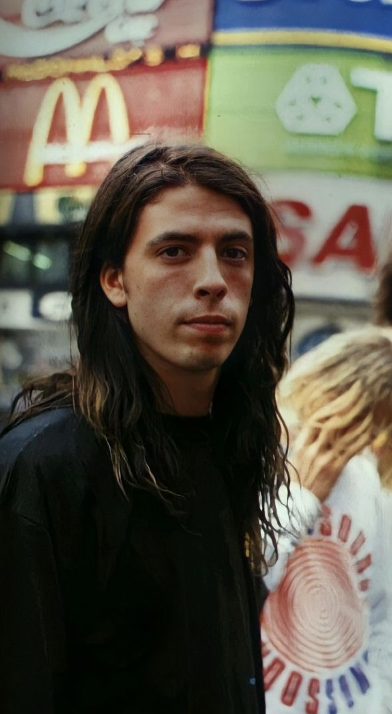

A historia da Banda
Formação e primeiros anos (1987-1990):
O Nirvana foi formado em 1987 em Aberdeen, Washington, uma pequena cidade dos Estados Unidos. A banda começou com Kurt Cobain(vocalista e guitarrista)e Krist Novoselic (baixista) ,amigos de infancia que compartilhavam o amor pela música punk rock.
Depois de várias tentativas de encontrar um baterista, eles recrutaram Chad Channing.O trio começou a tocar em pequenas casas de show e gravou sua primeira demo. Em 1989,lançaram seu álbum de estreia,Bleach,pela gravadora independente Sub Pop.
O disco tinha tinha uma sonoriedade crua e pesada,influenciada por bandas como Melvins e Black Sabbath.Embora não tenha sido um grande sucesso comercial, Bleach chamou a atenção da cena musical underground.
Àlbum:Bleach
Música:Blew
Clique aqui para ver a legenda da música Blew
Membros da banda:Chad Channing, Krist Novoselic e Kurt Cobain (1987-1990)
A banda se apresentava em casas de show:


O auge com "Nevermind"(1991):
Em 1990, Chad Channing deixou a banda e foi substituido por Dave Grohl um baterista talentoso que trouxe mais energia ao som do Nirvana. No ano seguinte, a banda assinou contrato com a gravadora Geffen Records e começou a trabalhar em seu segundo álbum,Nevermind.
O lançamento de Nevermind em setembro de 1991 marcou uma vida na música. O single "Smells Like Tenn Spirit"explodiu nas rádios e na MTV,catapultando o Nirvana ao estrelato global. O álbum vendeu milhões de cópias e substituiu Michael Jackson no topo das paradas, tornando-se o simbolo da geração grunge e da cultura alternativa dos anos 1990.
Àlbum:Nevermind

Dave Grohl: O novo baterista da Banda
Música:Smells Like Teen Spirit
Clique aqui para ouvir a música Smells Like Teen SpiritClique aqui para ouvir a música com legenda
In Utero e o fim da banda(1993-1994):
Em 1993, o Nirvana lançou In Utero um álbum mais sombrio e experimental produzido por Steve Albini.Canções como "Heart-Shaped Box" e "All Apologies"apresentaram um lado mais introspectivo de Cobain. Apesar das criticas positivas, Cobain lutou contra problemas pessoais, incluindo o vicio em drogas e a presão da fama.
Infelizmente, em 5 de abril de 1994, Kurt Cobain foi encontrado morto em sua casa em Seattle, em um aparente suicidio.Sua morte marcou o fim trágico da banda e deixou um impacto remanescente na música e na cultura.
Àlbum:In Utero

Clique aqui para ouvir a música Heart-Shaped Box
Clique aqui para ouvir a música com legenda
Legado:
Embora tenha existido por alguns anos,o Nirvana continua a ser uma das bandas mais influentes de todos os tempos.Com apenas tres álbuns de estúdio, eles definiram uma geração e abriram caminho para o sucesso de outras bandas de movimento gruge, como Pearl Jam, Soundgarden e Alice in Chains.